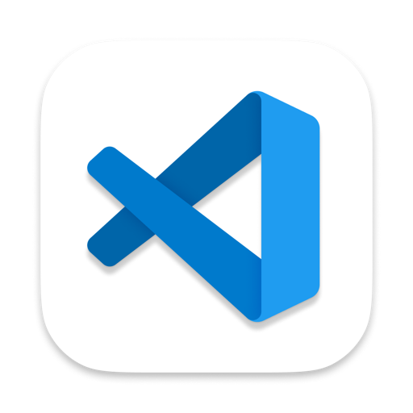
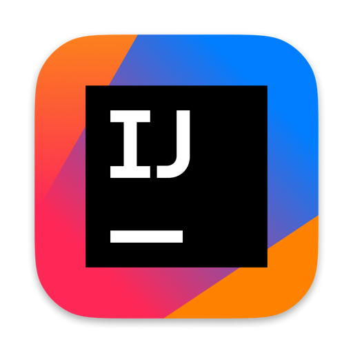

preview
v0.1 — built for macOS 26 Tahoe
·
Read the changelog
Any project.
Any project.
Two keys.
⌥ SpaceSearch projects
⌥ TabSwitch windows
⌘ .Project actions
A keyboard-driven project launcher for developers who juggle dozens of repos across every editor on macOS. Press a hotkey, type a few letters, land in the right window.
macOS 26+ Tahoe
Apple Silicon + Intel
No account · no telemetry
⌥
+
Space

-
TSweb-app~/code/web-app · feat/pricing · 7


-
GOplexo-cli~/code/side/plexo-cli · main
-
GOapi-gateway~/code/work/api-gateway · main
-
TSreact-dashboard~/code/work/react-dashboard · feat/onboarding · 3
-
RBnotion-clone~/code/side/notion-clone · main
Press↵to open